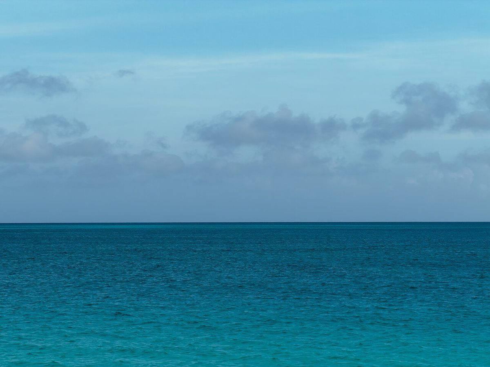

制作側の連想
九文字を、ばらして読む。
店名の由来は分かりません。制作側は「PORTO HAUS」という綴りをながめて、文字の並びの中に小さな単語がいくつも隠れていることに気づきました。このページはその単語を拾い集めた帖です。制作側の連想で、お店の理念・由来とは無関係です。
拾った六語
PORT・TO・ORT・HA・US・AUS
写真は言葉のイメージで選んだ国外・撮影地不明のフリー素材です。下関市のものではありません。
- PORT港

国外のイメージ(オランダ) - TO〜へ

国外のイメージ(タークス・カイコス諸島) - ORT(独)場所

国外のイメージ(イタリア) - HAハ

撮影地不明のイメージ - US私たち

撮影地不明のイメージ - AUS(独)〜から

国外のイメージ(米国)
ご案内
お店のこと(確認できたものだけ)
| 所在地 | 〒750-0006 山口県下関市南部町２６−１５ |
|---|---|
| 電話 | なし |
| 営業時間 | 準備中 |
| 定休日 | 準備中 |
| ご予約 | 準備中 |
| 駐車場 | 準備中 |
| SNS | Instagram @porto_haus |